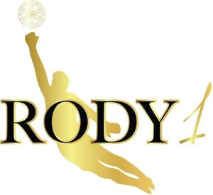

Trade Mark Journal No.2025/017 25 April 2025
WO0000001836148 (5,14,25,28,32,33,35)
Office of origin: European Union Intellectual Property Office (EUIPO)
Date of International Registration:17 September 2024
Date of designation in the UK:
17 September 2024

The mark contains the colours black and gold.
Gold: goalkeeper, ornamental ball, number "1", outline of letters "RODY", Black: letters "RODY".
International priority date claimed: 12 September 2024
(European Union Intellectual Property Office (EUIPO))
(019060826)
- Class 5
- Dietary and nutritional supplements; pharmaceutical preparations; dill oil for medical purposes; air deodorizing preparations; medicated after-shave lotions; vitamin preparations; albumin dietary supplements; dietary fibre; mineral dietary supplements; linseed dietary supplements; linseed oil dietary supplements; wheat germ dietary supplements; yeast dietary supplements; royal jelly dietary supplements; propolis dietary supplements; pollen dietary supplements; enzyme dietary supplements; glucose dietary supplements; lecithin dietary supplements; alginate dietary supplements; casein dietary supplements; protein dietary supplements; albuminous foodstuffs for medical purposes; albuminous preparations for medical purposes; tonics [medicines]; mineral waters for medical purposes; mineral water salts; salts for mineral water baths; bath preparations for medical purposes; candy, medicated; medicinal drinks; medicinal herbs; medicinal roots; powdered milk for babies; gelatine for medical purposes; linseed for pharmaceutical purposes; dietetic foods adapted for medical purposes; medical preparations for slimming purposes; by-products of the processing of cereals for dietetic or medical purposes; preparations of trace elements for human and animal use; pharmaceutical preparations containing cbd oil; nutritional supplements containing cbd oil; medical preparations; sanitary preparations for medical purposes; disinfectants; vermicides; fungicides; herbicides; pharmaceuticals and natural remedies; medicated hair care preparations; medicated hair lotions; pharmaceutical preparations for treating dandruff; hair growth stimulants; medicinal hair growth preparations; tonics for medical use; lice treatment preparations [pediculicides]; pharmaceutical preparations and substances with anti-inflammatory properties; poultices; herbal mud packs for therapeutic use; medicated creams for moisturising the skin; health food supplements made principally of vitamins; dietary supplements and dietetic preparations; vitamin supplements; vitamin and mineral supplements; food supplements; dietetic confectionery adapted for medical purposes; health food supplements for persons with special dietary requirements; pharmaceutical preparations and substances; pharmaceutical sweets; konjac plant dietary supplements; sweets with extracts of indian viper's foot, for medical purposes; disinfectant soap; medicinal oils; cannabis for medical purposes; tanning pills; food supplements for relaxation and food supplements to aid sleep, and dietary supplements to aid sleep and relaxation; dietary supplements for stress relief; dietary supplemental drinks; malted milk beverages for medical purposes; diabetic fruit juice beverages adapted for medical purposes; vitamin fortified beverages for medical purposes; electrolyte replacement beverages for medical purposes; dietary supplements in the form of apple-cider vinegar gelatine tablets and food and dietary supplements in the form of apple-cider vinegar tablets; apple cider vinegar for medical purposes; medicated shampoos.
- Class 14
- Pearls made of ambroid [pressed amber]; clocks; watches; clocks and watches, electric; sports watches; pocket watches; wristwatches; chronographs [watches]; watch chains; watch clasps; watch bands; clocks and watches, electric; digital watches with automatic timers; charms for key rings; key rings [split rings with trinket or decorative fob]; paste jewellery; jewellery; trinkets (articles of jewellery); earrings; chains [jewellery]; necklaces [jewellery]; jewellery charms; rings [jewellery]; bracelets [jewellery]; cameos [jewelry]; jewellery; lockets [jewellery]; amulets [jewellery]; pearls [jewellery]; jewellery of yellow amber; ornaments of jet; cloisonné jewellery; jewelry cases [caskets or boxes]; cuff links; tie pins; ornamental pins; cabochons; paste jewellery; silver, unwrought or beaten; threads of precious metal [jewellery]; precious metals, unwrought or semi-wrought; semi-precious stones.
- Class 25
- Football shoes; football studs; clothing; footwear; hats; Tee-shirts; sports jerseys; ready-made clothing; dresses; jumper dresses; suits; jackets [clothing]; overcoats; coats; camisoles; stuff jackets [clothing]; parkas; capes; ponchos; skirts; skorts; underpants; sashes for wear; neckties; shirts; short-sleeve shirts; outerclothing; spats; leggings [leg warmers]; leggings [trousers]; clothing for gymnastics; vest tops; sports singlets; cyclists' clothing; beach clothes; bathing suits; underwear; brassieres; slips [underclothing]; petticoats; teddies [underclothing]; garters; underpants; boxer shorts; pyjamas; knickers; babies' pants [underwear]; bodices [lingerie]; dressing gowns; sweaters; sweaters; knitwear [clothing]; baby clothes; shoes; boots for sports; boots; sports shoes; gymnastic shoes; slippers; sandals; wooden shoes; beach shoes; espadrilles; fittings of metal for footwear; stockings; tights; toe socks; belts [clothing]; money belts [clothing]; furs [clothing]; headbands [clothing]; caps being headwear; visors being headwear; skull caps; baseball caps; ear muffs [clothing]; millinery; clothing of leather; clothing of imitations of leather; motorists' clothing; waterproof clothing; combinations [clothing]; neck scarves; ascots; fur stoles; pockets for clothing; gloves [clothing]; muffs [clothing]; ski gloves; fingerless gloves.
- Class 28
- Body-building apparatus; toy glow stick bracelets for parties; cone markers for sports; hand clappers [noisemaker toys]; trading card games; playing cards; electric muscle stimulation bodysuits for sports; printed lottery tickets; educational games; soccer goals; soccer balls; shin guards for soccer; football gloves; soccer disc cones; foosball tables; soccer ball bags; miniature replica football kits; sporting articles and equipment; machines for physical exercises; training equipment for building muscle; muscle exercise apparatus; novelty toys for playing jokes; shuttlecocks; baseball gloves; billiard tables; boxing gloves; protective padding for sports; knee guards [sports articles]; shin guards [sports articles]; forearm guards [sports articles]; exercise weights; chest expanders [exercisers]; golf clubs; golf gloves; golf bag trolleys; appliances for gymnastics; toys; toys; balls for games; archery implements; swimming rings; water wings; tennis nets; supporters (men's athletic -) [sports articles]; trampolines; fabric toys; toy cars; party balloons; toy pushchairs; action figures [toys or playthings]; action toys; dolls; puppets; dolls' rooms; children's playthings; toy tea sets; wooden toys; toy figures; toys made of rubber; rag dolls; musical toys; toy musical instruments; toy models; toy tools; bathtub toys; toys for sandpits; infants' action crib toys; toys made of wood; costumes being childrens playthings; toys made of metal; craft model kits; hand puppets; manipulative games; plush toys; dolls' clothes; shoes for dolls; bendable toys; plush toys; toy whistles; play money; puzzles; kites; toy sets; chess pieces; chessboards; building games; board games; train sets; spinning tops [toys]; exercise trampolines; exercise benches; yoga straps; gym balls for yoga; yoga blocks; waist trimmer exercise belts; stationary exercise bicycles; exercise treadmills; video game consoles; controllers for game consoles; external cooling fans for game consoles; toy gum machines.
- Class 32
- Preparations for making non-alcoholic beverages; non-alcoholic honey-based beverages; protein-enriched sports beverages; non-alcoholic beverages flavoured with coffee; non-alcoholic dried fruit beverages; shandy; soft drinks; beer; energy drinks; mineral water [beverages]; waters [beverages]; table waters; bottled drinking water; syrups and other non-alcoholic preparations for making beverages; preparations for making aerated water; non-alcoholic beverages flavoured with tea; cocktails, non-alcoholic; flavoured waters; non-alcoholic fruit juice beverages; lemonades; soda water; seltzer water; aerated water; lithia water; isotonic beverages; rice-based beverages, other than milk substitutes; soya-based beverages, other than milk substitutes; non-alcoholic fruit extracts; beverages consisting of a blend of fruit and vegetable juices; beverages consisting principally of fruit juices; syrups for beverages; malt beer; beer wort; non-alcoholic beer; extracts of hops for making beer; malt wort; ginger beer; kvass [non-alcoholic beverage]; beer-based cocktails; non-alcoholic essences for making beverages; fruit nectars, non-alcoholic; smoothies; must; sherbets [beverages]; juices; vegetable juices [beverages]; squashes [non-alcoholic beverages]; malt syrup for beverages; aperitifs, non-alcoholic.
- Class 33
- Alcoholic beverages (except beer); spirits [beverages]; liqueurs; wine; rum; vodka; whisky; aperitifs; gin; cocktails; hydromel [mead]; alcoholic beverages containing fruit; alcoholic extracts; anise [liqueur]; brandy; curacao; distilled beverages; digestifs [liqueurs and spirits]; arrack [arak]; sugarcane-based alcoholic beverages; rice alcohol; fruit extracts, alcoholic; kirsch; bitters; alcoholic essences; peppermint liqueurs; grain-based distilled alcoholic beverages; sake; piquette; pre-mixed alcoholic beverages, other than beer-based; absinthe; alcoholic energy drinks; alcoholic punches; alcoholic preparations for making beverages; alcoholic egg nog; baijiu [chinese distilled alcoholic beverage]; cachaca; chinese spirit of sorghum (gaolian-jiou); soju; chinese mixed liquor (wujiapie-jiou); sake substitutes; nira [sugarcane-based alcoholic beverage]; rum-based beverages; preparations for making alcoholic beverages; tonic liquor containing mamushi-snake extracts (mamushi-zake); tonic liquor flavored with pine needle extracts (matsuba-zake); tonic liquor flavored with japanese plum extracts (umeshu); shochu (spirits); sangria; table wines; vermouth; wine punch; sparkling wines; cherry brandy; extracts of spiritous liquors.
- Class 35
- Business management assistance; business management and organization consultancy; updating of advertising material; distribution of samples; advertising agency services; advisory services for business management; modelling for advertising or sales promotion; business consulting; arranging newspaper subscriptions for others; news clipping services; personnel selection using psychological testing; outsourcing services [business assistance]; sponsorship search; business management of sports people; telemarketing services; retail services for pharmaceutical, veterinary and sanitary preparations and medical supplies; promotion of goods and services through sponsorship of sports events; commercial intermediation services; mediation and conclusion of commercial transactions for others; provision of an online marketplace for buyers and sellers of goods and services; development of advertising concepts; scriptwriting for advertising purposes; business intermediary services relating to the matching of potential private investors with entrepreneurs needing funding; consultancy regarding advertising communication strategies; negotiation of business contracts for others; targeted marketing; media relations services; corporate communications services; business intermediary services relating to the matching of various professionals with clients; advertising services to create brand identity for others; promotion of goods through influencers; influencer marketing; business partnership search; marketing through product placement for others in virtual environments; retail and wholesale services in relation to dietary supplements, jewellery, wristwatches, clothing, footwear, headwear, football equipment, games, toys, sports equipment, alcoholic and non-alcoholic beverages, cereal bars and foodstuffs; import-export agency services; cost price analysis; business appraisals; price comparison services; commercial administration of the licensing of the goods and services of others; procurement services for others [purchasing goods and services for other businesses]; sales promotion for others; distribution and dissemination of advertising materials [leaflets, prospectuses, printed material, samples]; public relations services; advertising; dissemination of advertisements; online advertising on a computer network; rental of advertising time on communication media; layout services for advertising purposes; publication of publicity texts; personnel recruitment; advertising by mail order; marketing; business research; demonstration of goods; organization of fashion parades for sales promotion purposes; organization of exhibitions for commercial or advertising purposes; organization of trade fairs; presentation of goods on communication media, for retail purposes; bill-posting; rental of advertising space; publicity material rental; radio advertising; television advertising; production of advertising films; data search in computer files for others; commercial information and advice for consumers in the choice of products and services; computerized file management; administrative processing of purchase orders; compilation of information into computer databases; systemization of information into computer databases; information services relating to businesses; shop window dressing; rental of sales stands.
Marek Rodák
Representative: Róbert Porubčan, Puškinova 19, SK-900 28 Ivanka pri Dunaji, SLOVAKIA